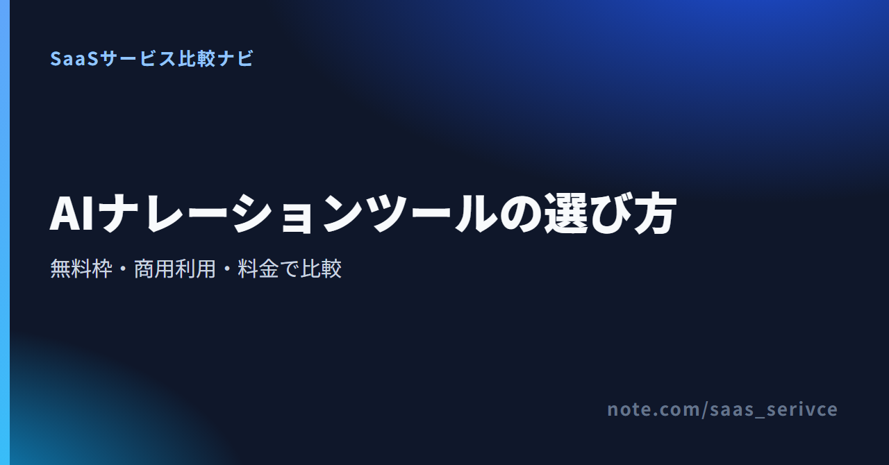

動画や研修資料に使う原稿を自分で読めば録り直しが増え、外注すれば費用がかかり、納期の調整も必要です。AIナレーションを使えば、原稿から音声を作れます。ただし、「無料で生成できる」と「商用動画で公開できる」は同じ意味ではありません。
日本語音声があっても、画面や窓口まで日本語とは限りません。ここでは、完成済みの原稿を読み上げる用途に絞り、4製品を無料入口、商用条件、クレジット、料金、契約実務で整理します。いずれも未契約のため、音質や自然さに順位を付けず、公式情報をもとに選び分けます。
月払い$6のStarterまで見据えるならElevenLabs、時間単位の生成枠で選ぶならMurf AIです。無料のキャラクター音声ならVOICEVOX、日本語UIのクラウド型ならCoeFontが候補です。 日本語の自然さは、同じ原稿を読ませて確かめます。契約するかどうかは、保存の可否、商用利用、クレジット表記まで含めて判断します。
ElevenLabsのFreeでは、月10,000クレジット分を試せます。ただし、商用ライセンスは付きません。Freeで生成した音声を非商用で公開する場合も帰属表示が必要です。商用版はStarter以上へ加入してから生成します。
Murf AIのFree Trialはカード不要で、音声生成10分を試せます。ただし、音声をダウンロードできず、商用権も付きません。音声を書き出して公開したい場合は、有料プランの条件まで確認します。
音声の印象と、公開までの実務を分けて比べます。 確認したいのは次の7項目です。
社名、日付、金額、英字が混じる実際の原稿で、誤読、句読点の間、文末の抑揚を聞きます。読み間違いが出た場合は、表記変更だけで直るのか、文全体を再生成するのかも記録します。
商用利用が認められていても、クレジット表記が不要とは限りません。契約プラン、生成音声の条件、キャラクター個別規約、指定文言を別々に確認します。VOICEVOXは無料で商用利用できますが、クレジットとキャラクターごとの規約が必要です。
無料入口は4製品すべてにありますが、保存や商用公開の条件は異なります。生成できる時間や文字の量に加えて、保存、公開、収益化までを一続きで確認します。
ElevenLabs、Murf AI、CoeFontはクラウド型、VOICEVOXはダウンロード型です。複数端末で使うか、社内端末へソフトを導入できるかで選択肢が変わります。
4製品は、料金体系に加えて、汎用ナレーター音声かキャラクター音声か、クラウド型かダウンロード型かも異なります。 総合順位を付けず、自分の動画や研修素材に近い用途から候補を絞ってください。
ElevenLabsは日本語音声に対応するクラウド型サービスです。Freeは月10,000クレジット、Studio 3プロジェクトまでで、商用ライセンスとクレジットの繰り越しはありません。Starterは月払い$6、年払いでは月額$5相当で、月30,000クレジットとStudio 20プロジェクトを利用できます。
1ドル=159円程度なら、年払いの月額相当は約795円、月払いは約954円です。円換算は為替で変動します。公式サイトには日本語版がありますが、生成画面の日本語表示と日本語窓口は公式公開情報で確認できません。
Freeは、原稿の発音と声の候補を確かめる入口です。Freeで生成した音声は後から有料化しても商用利用できないため、商用の動画や広告に使う音声はStarter以上の契約中に生成します。
Murf AIはStudioで音声を作り、動画制作へ渡す流れを組みたい人向けです。Free Trialはカード不要で、300を超えるvoiceと33言語、音声生成10分、文字起こし10分を試せますが、ダウンロードと商用利用はできません。
Creatorは月払い$29または年払い月額$19相当で、月2時間または年24時間です。Businessは月払い$99または年払い月額$66相当で、月8時間または年96時間です。前者にはcommercial rights、後者にはbusiness licenseが含まれます。一方、利用主体と公開範囲の境界は、公式公開情報だけでは判断できません。日本語voiceは用意されています。ただし、日本語UIと日本語サポートは確認できないため、無料期間中に操作経路まで確かめます。
無料で音声を作れることと、成果物を保存して公開できることは別です。実際の原稿を試した後は、ダウンロードと商用権を含む有料プランを選びます。
VOICEVOXは、エディタ、エンジン、音声ライブラリが無償公開されているダウンロード型ソフトです。有料プランや試用期限、解約手続きはありません。
商用・非商用とも無料ですが、生成音声には「VOICEVOX:ずんだもん」のようなクレジットが必要です。キャラクターごとの利用規約もあるため、本体と、使用する音声ライブラリの両方を確認します。公式サイトと規約は日本語です。
支払いは発生しません。ダウンロードする前にソフトウェア利用規約を読み、音声を選んだ後でキャラクター個別の規約とクレジット文言を確認します。
CoeFontは日本語サイトと日本語UIがあるクラウド型サービスです。Freeは月800文字、非商用限定で、「Voiced by coefont.cloud」の表示が必要です。
Standardは月$20で月80,000文字、Plusは月$350で月1,000,000文字、最大5ユーザーです。両プランはカード払いのみで、銀行振込と年間契約には対応していません。一方、Enterpriseは銀行振込のみで、年間契約に限られます。日本語の問い合わせ窓口は公式公開情報で確認できません。
Freeは非商用の原稿で操作と音声を試すための入口です。商用に使う音声はStandard以上の契約中に生成します。
無料入口で確認する範囲と、公開用の音声を作る工程を分けるのが要点です。 試聴後に同じファイルを流用できるとは限らないため、生成時のプラン条件まで見て有料化を判断します。
非商用で公開する場合、ElevenLabsのFree生成物には「elevenlabs.io」または「11.ai」の表示が必要です。CoeFontのFreeでは「Voiced by coefont.cloud」と表示します。商用版は対象の有料プランへ加入してから生成します。
ElevenLabsのFree生成物は有料化後も商用利用できないため、Starter以上の契約中に再生成します。
CoeFontも、商用に使う音声はStandard以上の契約中に生成します。
Murf AIのFree Trialはダウンロードできません。声と原稿の相性を確認し、制作物へ組み込む段階で有料プランを検討します。
法人やチームは、commercial rightsとbusiness licenseのどちらが用途に合うかを、契約前に問い合わせます。
VOICEVOXに料金や期限はありませんが、本体と使用キャラクターの規約、クレジット文言を公開前に確認します。
公式サイトから無料で入手できます。使う音声ライブラリが変われば、規約も確認し直します。
自然さは一文の印象で決めず、固有名詞、数字、英字、間、感情表現を含む同じ短文で確かめます。 製品ごとの点数や順位を付けるより、自分の原稿で直す箇所と手間を記録する方が実務的です。
試す原稿は60〜100字ほどに絞り、普段使う固有名詞、数字、英字を一つずつ入れます。たとえば次のような短文です。
「SaaSサービス比較ナビからのお知らせです。10月15日午後3時より、新プランの説明会を開催します。参加費は3,500円です。準備が整いましたら、担当の佐藤までご連絡ください。」
どの音声にも同じ文章を使い、誤読した語と修正に必要な操作だけを記録します。
聞く順番を固定すれば、声の好みと修正量を同じ条件で比べられます。
公式公開情報で発音辞書や感情調整の操作方法が分からない製品は、無料枠やトライアルの画面で修正経路を確かめます。
編集画面で確認した後、公開先に近いスマホのスピーカーとイヤホンでも、数字、固有名詞、語尾が聞き取れるかを確かめます。BGMを重ねる場合は、音声が埋もれないかも同じ原稿で聞き直します。
契約プラン、音声やキャラクターの規約、クレジット文言、声の権利を分けて確認します。
ElevenLabsはStarter以上、CoeFontはStandard以上の契約中に商用版を生成します。Murf AIはCreatorとBusinessでライセンス表記が異なるため、法人・チームは用途を伝えて確認してください。生成時と公開時の双方でプラン条件を照合します。
公開前は次の4点を確認します。
VOICEVOXは本体に加え、使う音声ライブラリやキャラクターの規約も読みます。
公開前に、指定されたクレジット文言まで照合します。
サービス上で生成できても、他人や実在人物に似せた声を公開できるとは限りません。本記事では音声クローンを扱いませんが、人物に結び付く声を使う場合は、本人の同意を得て、公開先も確認する必要があります。
有料サービスは、支払い方法、証憑、解約時期、返金条件まで確認します。 ElevenLabsとMurf AIは海外サービスです。CoeFontはプランで決済方法が分かれ、VOICEVOXには課金がありません。必要な手続きも製品ごとに異なります。
ElevenLabsはカード、Apple Pay、Google Payに対応しますが、カードブランドの個別名は公式公開情報で確認できません。請求書と領収書はメールで届きます。Subscription→Manage subscription→Manage billing information→Invoice Historyから、PDFも取得できます。
解約はSubscription→Manage subscription→Cancel subscriptionから行います。期末にFreeへ移ると、未使用クレジットは失効します。返金対象は支払いから14日以内かつクレジット未使用の場合です。
契約前には、更新周期と残クレジットの扱いまで確認します。
Murf AIはAmEx、CUP、Discover/Diners、eftpos、JCB、Mastercard、Visaのカードに対応し、PayPalは非対応です。invoiceと銀行送金はEnterpriseに限られます。
invoiceまたはreceiptはメールで届き、Workspace SettingsのInvoicesからPDFも取得できます。解約はSubscriptionから行い、期末で終了します。原則返金不可ですが、購入24時間以内かつ音声生成10分未満なら申請できます。
法人やチームは、契約前にライセンス範囲も問い合わせます。
StandardとPlusはカード払いのみで、銀行振込と年間契約は利用できません。Enterpriseは銀行振込のみで、年間契約に限られます。領収書はAccount Settings→Payment→Billing Historyから取得できます。ただし、Freeへ移ると履歴を見られません。請求書と返金条件は公式公開情報で確認できないため、必要なら契約前に問い合わせます。
有料プランは設定からFreeへ変更でき、翌月以降は課金されません。
領収書はFreeへ変更する前に保存しておきます。
VOICEVOXには請求書、更新、解約、返金の手続きがありません。利用をやめる場合はアンインストールしますが、公開済み音声には規約とクレジット条件が残ります。
海外サービスへの支払いに関する消費税や経理処理は、契約主体と利用目的で扱いが変わる可能性があるため、必要に応じて税理士に確認してください。
無料枠、保存、商用条件、操作環境から1〜2製品へ絞り、同じ原稿で発音と修正の手間を確かめます。 自然さだけで順位を付けず、公開までの条件で選んでください。
ElevenLabsの商用版はStarter以上の契約中に生成します。
Murf AIは利用主体と公開範囲に合うライセンスを確認して選びます。